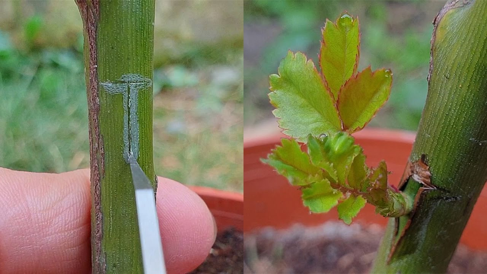

What is Plant Budding?
Plant budding is a crucial aspect of vegetative propagation in plants, wherein a new plant emerges from a dormant bud on the parent organism. This process harnesses the remarkable capacity of plants to reproduce asexually, bypassing the need for sexual reproduction. Budding typically involves the activation of meristematic cells within the bud, which undergo differentiation to give rise to specialized tissues and organs, eventually forming a complete, independent plant.

This method is widely employed in horticulture and agriculture for various purposes, including the production of genetically identical clones with desirable traits. Different techniques such as T-budding, chip budding, and patch budding are utilized depending on the specific plant species and desired outcomes. For instance, fruit growers often use budding to propagate high-yielding or disease-resistant varieties of fruit trees. Moreover, budding allows for rapid multiplication of plants, enabling efficient propagation on a commercial scale and contributing to the maintenance of biodiversity in agricultural systems.
What Are The Reasons For Grafting?
- Asexual Reproduction: Budding allows plants to reproduce asexually, enabling them to propagate without the need for fertilization or the production of seeds.
- Genetic Continuity: It maintains genetic continuity by producing offspring that are genetically identical to the parent plant, preserving desirable traits and characteristics.
- Rapid Multiplication: Budding facilitates the rapid multiplication of plants, allowing for efficient propagation on a large scale in agriculture and horticulture.
- Preservation of Varieties: It helps in preserving specific varieties or cultivars of plants by cloning them through budding, ensuring their continued existence and availability.
- Propagation of Hybrids: Budding is instrumental in propagating hybrid plants, allowing for the retention and dissemination of beneficial traits obtained through crossbreeding.
- Propagation of Ornamentals: It is commonly used in propagating ornamental plants to maintain uniformity and consistency in appearance, essential for landscaping and ornamental gardening.
- Disease Resistance: Budding can be used to propagate plants that exhibit resistance to diseases, helping to maintain healthy populations and reduce reliance on chemical pesticides.
Advantages of Budding
- Genetic Uniformity: Ensures uniformity in traits and characteristics among offspring.
- Preservation of Desirable Traits: Propagates plants with specific advantageous traits like disease resistance or high yield.
- Rapid Multiplication: Facilitates quick propagation compared to sexual reproduction methods.
- Early Production: Leads to earlier maturity and fruiting, resulting in faster commercial yields.
- Controlled Propagation: Enables growers to produce desired varieties in specific quantities reliably.
- Year-round Propagation: Can be performed throughout the year, offering flexibility in propagation schedules.
- Suitable for Clonal Selection: Ideal for identifying and propagating individuals with desired traits in breeding programs.
- Reduced Genetic Drift: Minimizes the risk of genetic variability, ensuring stability in cultivated plant populations.
What Are The Types Of Budding?
- T-budding
- Chip budding
- Patch budding
plant propagation methods by budding